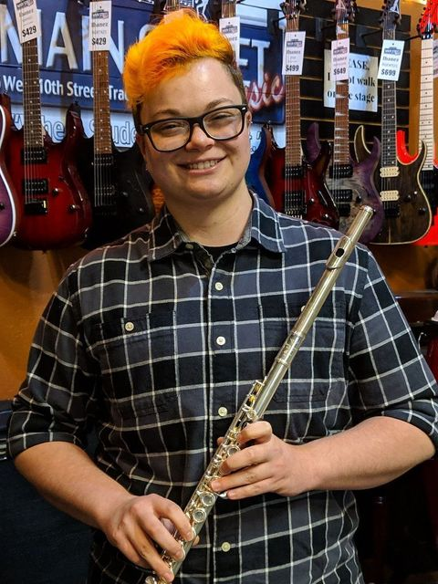
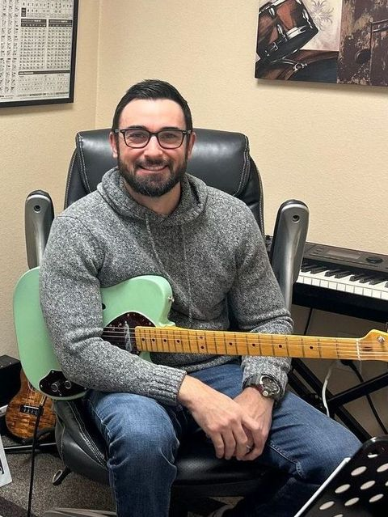
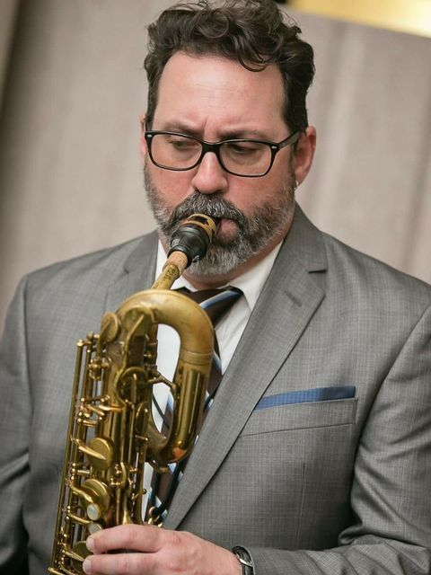

You are not learning from a stranger.
Fourteen teachers. Berklee, the Manhattan School of Music, the San Francisco Conservatory, the Brubeck Institute. Most have taught here for a decade or more. These are the people who would actually be teaching you.
Piano & keyboard
-
Mike Hall
Piano & Hammond B3
Sixty-three years on piano, performing since 1968 and teaching since 1972. Has opened for Hot Tuna and Jefferson Starship and played the Monterey Jazz Festival. Also teaches flute, piccolo, guitar, bass, ukulele and banjo.
-
Takako Williams
Piano
Began lessons at four years old in Osaka. Studied at Osaka College of Music, then Notre Dame de Namur and the San Francisco Conservatory. First prize in the Notre Dame concerto competition. Twenty-six years teaching privately.
-
Emma Hewitt
Piano
Playing for almost twenty years and teaching since her freshman year of high school. Trained in the Suzuki method. Joined the store in 2022 and runs both of our annual recitals.
-

Phoenix Thanatos
Flute, Piccolo, Voice & Piano
Performance degree from Cal State East Bay and fourteen years on the flute. Performed in an Amy Porter master class and sang in the Legend of Zelda symphony chorus. Five years teaching.
Guitar, bass & ukulele
-

Brian Hunt
Guitar, Bass & Ukulele
Master's Certificate in theory, harmony and ear training from Berklee. Teaching here since 2008, across classical, jazz, rock and pop.
-
Sean Britt
Guitar
First guitarist ever chosen for the Brubeck Institute Fellowship, in 2013, and has played with Christian McBride and Stefon Harris. BFA in Jazz Studies from The New School, Master of Music from the Manhattan School of Music.
Voice
-
Bernardette Medeiros
Voice
Bachelor of Music in vocal performance, cum laude, from University of the Pacific on a full scholarship. Fourteen years teaching. Past students have appeared on America's Got Talent, The Voice and American Idol. A third-generation Tracyite.
-
Edward Tavalin
Voice
A baritone who studied at University of the Pacific and CSU Northridge. Has performed with the Santa Cruz Opera Project, Portland Opera and Opera Modesto, mostly Puccini, Verdi and Donizetti.
Woodwinds & brass
-
Tom Renner
Saxophone, Clarinet & Flute
Thirty years teaching, with a B.A. in music education from Gustavus Adolphus. Visual and Performing Arts Coordinator for Tracy Unified. Also teaches trumpet, trombone, violin and piano.
-

Dave Villa
Saxophone & Winds
Playing since 1982 and teaching since 1995, with a Bachelor's in Music Education from CSU Stanislaus. Twenty-one years in public schools. Also covers flute, clarinet, trumpet, trombone, violin and viola.
Drums & percussion
-
Joseph Serrano
Drums & Percussion
Twenty-three years behind the kit. Currently plays with the Latin funk band Third Sol, and previously toured the US and Canada with Wrath of Vesuvius and Black Passage. Funk, R&B, rock, jazz and metal.
Orchestral strings
-
Elizabeth Dubie
Violin, Viola & Cello
Teaching privately since 1996 and in Tracy public schools since 2008. Bachelor of Music from CSU Stanislaus, with a credential from the San Joaquin County Office of Education.
-
Erik Alvarez Urbina
Cello
A University of the Pacific graduate who studied under Louise Saunders, Nina Flyer and Jakob Koranyi. Known around here as the Rocking Cellist.
-
Aidan
Cello
Came from Milwaukee in 2023, where he was principal cellist of the Milwaukee Philharmonic and a lead string instructor with the Milwaukee Youth Symphony. Also composes.
Tell us the instrument and the afternoons that work.
You do not have to choose a teacher off this page. Openings move around as students start and finish, so the practical question is who has a slot at a time you can actually make.
Several of these teachers cover more instruments than their heading lists. If what you want is not here, ask anyway.
- Working musicians. Most hold music degrees; several hold California teaching credentials.
- They stay. Teachers here are measured in decades, not semesters.
- You keep the same one. No rotating substitutes week to week.